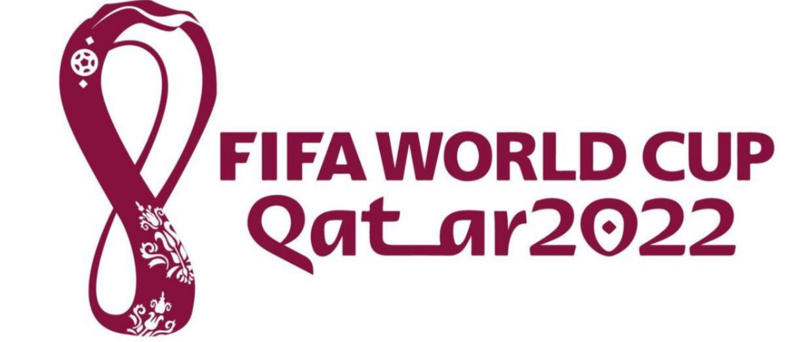
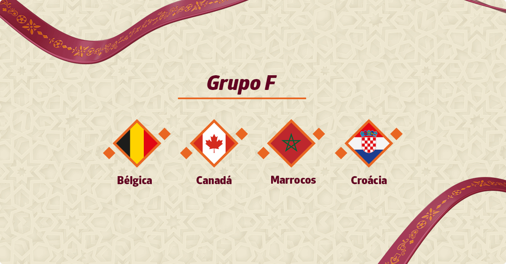
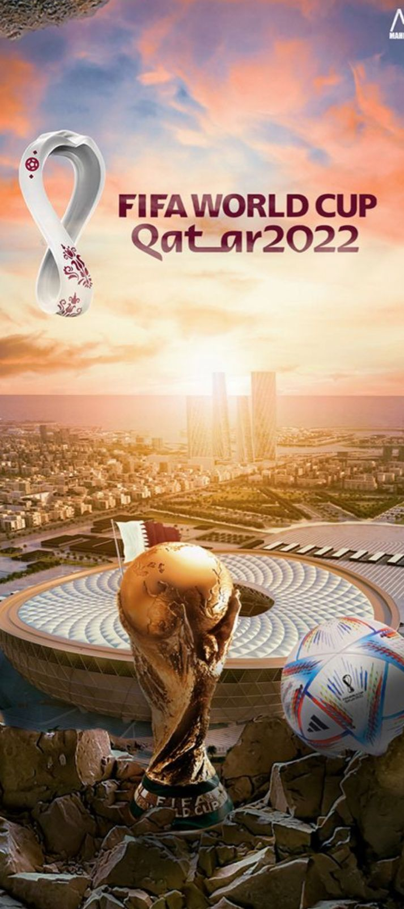
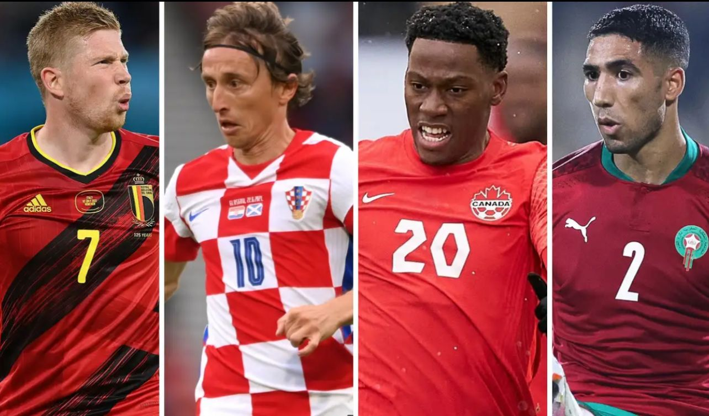
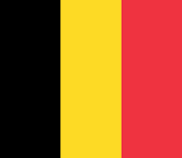
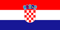

A Belgica esteve presente em onze mundiais, sendo que sua maior classificação se deu 2018 na Russia, onde terminou na terceira colocação. Na Europa, o melhor desempenho foi o vice-campeonato em 1980.
O Canadá também ganhou uma medalha de ouro nos jogos olímpicos de verão em 1904 o Canadá conquistou duas medalhas de ouro nos jogos da francofonia de 1989 e 1997 sendo até o momento o maior vencedor dessa competição.

Marrocos venceu a copa das Nações Unidas Africanas de 1976, do Campeonato das Nações Africanas e Nações Árabes uma vez. Eles participaram da Copa do mundo da FIFA cinco vezes, estando classificados para 2022. Seu melhor resultado veio en 1986, quando foi a primeira seleção africana a terminar em primeiro do grupo na Copa do Mundo

Hoje, os clubes de futebol na Croácia que dominam são Hajduk Split e Dinamo Zagreb. Desde a independência, o pais tem produzido uma série de jogadores que tiveram um bom desempenho, em muitos dos conceituados campeonatos europeus, e que levou a seleção nacional para o terceiro lugar na Copa do Mundo de 1998 e a disputara final da Copa do Mundo de 2018